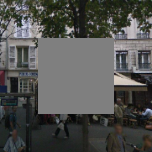
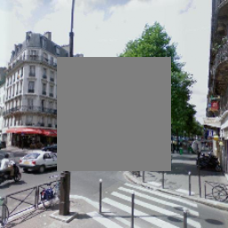
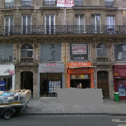
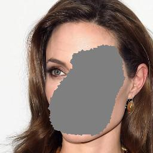
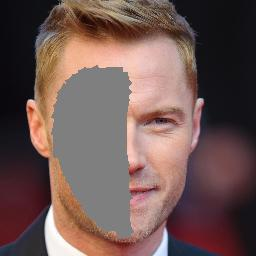
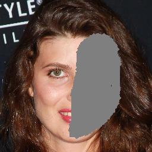

Pluralistic Image Completion
IJCV 2021; CVPR 2019
- Chuanxia Zheng NTU
- Tat-Jen Cham NTU
- Jianfei Cai NTU
Abstract
Most image completion methods produce only one result for each masked input, although there may be many reasonable possibilities. In this paper, we present an approach for pluralistic image completion the task of generating multiple diverse and plausible solutions for image completion. A major challenge faced by learning-based approaches is that here the conditional label itself is a partial image, and there is usually only one ground truth training instance per label. As such, sampling from conditional VAEs still leads to minimal diversity. To overcome this, we propose a novel and probabilistically principled framework with two parallel paths. One is a reconstructive path that extends the VAE through a latent space that covers all partial images with different mask sizes, and imposes priors that adapt to the number of pixels. The other is a generative path for which the conditional prior is coupled to distributions obtained in the reconstructive path. Both are supported by GANs. We also introduce a new short+long term attention layer that exploits distant relations among decoder and encoder features, improving appearance consistency. When tested on datasets with buildings (Paris), faces (CelebAHQ), and natural images (ImageNet), our method not only generated higher-quality completion results, but also with multiple and diverse plausible outputs.
Video
Model Architecture
Given a masked images, the generative pipeline (blue line) infers the conditional distribution of missing regions, that can be sampled during the testing to generate multiple and diverse results. During the training, the missing regions are encodered to a distribution, that can be sampled to rebuild the original input by combing with the features of visible part (yellow line). This structure is designed on a probabilistically principled freamework. The details can be found in the paper.
Short+Long Term Attention Layer (SLTAtten)
The proposed Short+Long Term Attention Layer is extended beyond the Self-Attention GAN. This SLTAtten layer not only use the self-attention map within a decoder layer to harness distant spatial context, but further capture feature-feature context between encoder and decoder layers. In this way, the similarity is calculated in the decoder features rather than between the encoder features and decoder features. Our ke novel is: doing so would allow the network a choice of copying information from encoder or the more semantically generative features from the decoder.
More Results
Results for center mask.
 |
|||
|  | |||
|  | |||
Results (original, input, output) for object removing.
 |
|||||
 |
 |
||||
|  | |||||
Results (original, input, output) for face playing.
|  | |||
 |
 |
||
|  | |||
|  |
Citation
Acknowledgements
The website template was borrowed from Mip-NeRF.